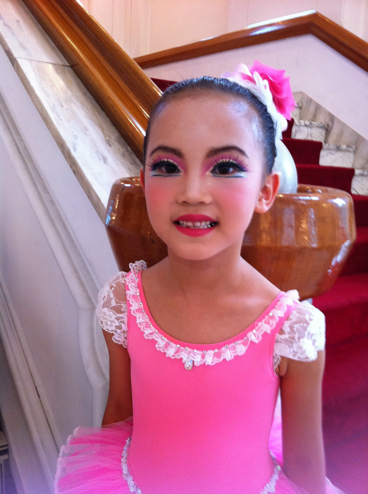
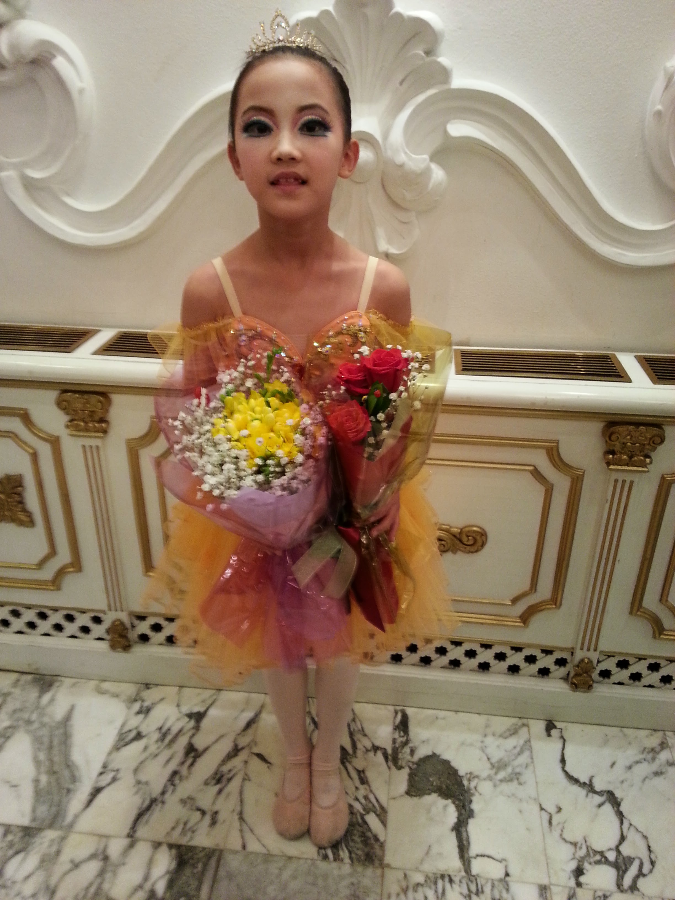
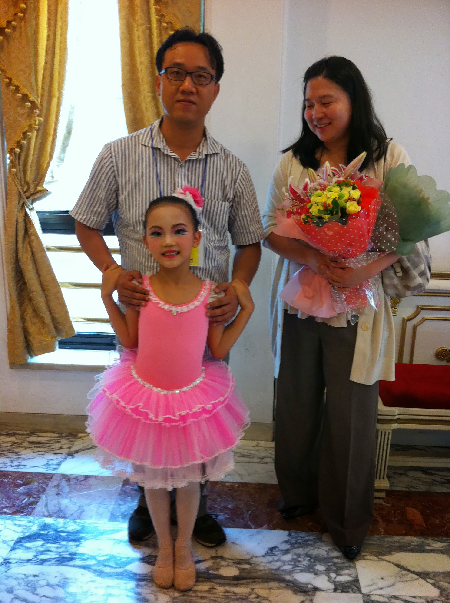

Start
1. I was not flexible.2. The dress looked pretty.
3. There were montly tests I had to pass.
4. My teachers complimented on my fast-learning skills.
5. I met good friends in the academy.


Performances
1. I did two performances in total.2. One with Nutcracker, One on Fairytales.
3. I tried so hard to find my parents in the audience while I was performing.
4. It was my first time trying makeup on.
5. I was the youngest to perform.
End
1. I did not enjoy doing ballet at all times.2. After five years and the last performance, I decided to stop doing it.
3. I had stiff body which did not fit the standards.
4. I wish I continued doing it.
5. As I got even more stiff now.

